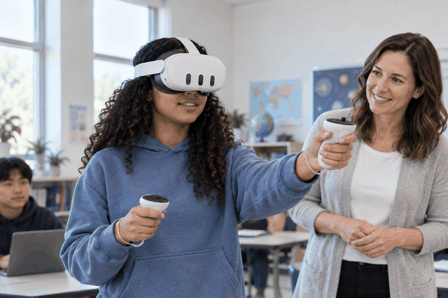
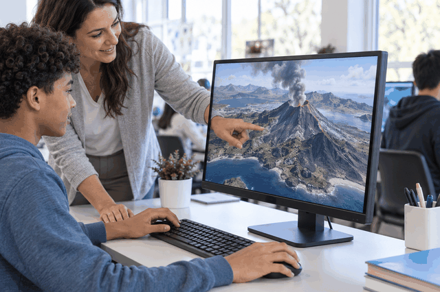

Compare VR Formats
In this module, instructors will compare four ways to access virtual environments and identify which format may be most appropriate for different instructional goals.
Here, HMD refers to a dedicated VR headset such as Meta Quest 3; VR Viewers refers to low-cost phone holders with lenses. Device VR uses the phone or tablet screen directly. On smaller screens, scroll across the table to see all four formats.
| Comparison Category | HMD (Head-Mounted Display) | Desktop VR | Device VR Phones and tablets |
VR Viewers Cardboard and plastic |
|---|---|---|---|---|
| Visual example |  |
 |
||
| Basic Definition | A wearable device that displays a virtual environment directly in front of the user’s eyes. | A virtual environment experienced through a computer screen. | A virtual environment explored directly on a smartphone or tablet screen, without a headset. | A low-cost cardboard or plastic viewer that holds a compatible smartphone in front of the eyes. |
| Main Equipment | VR headset, controllers, and sometimes motion sensors. | Desktop or laptop computer, monitor, keyboard, mouse, or game controller. | Smartphone or tablet with a compatible app or web experience. | Cardboard or plastic viewer, compatible smartphone, and a viewer-compatible VR app. |
| Level of Immersion | High; the headset covers much of the user’s field of view. | Moderate; the user views the virtual environment on a flat screen. | Limited; the virtual scene stays on a handheld screen while the surrounding room remains visible. | More visually immersive than a handheld screen; lenses present a separate view to each eye. |
| Interaction | Users can interact with the virtual environment using controllers, hand gestures, or head movements. | Users primarily interact with a keyboard, mouse, or game controller. | Tap or swipe to explore and select. Some apps also respond when the device is turned. | Turn your head to look around. Select using gaze or a viewer button, depending on the app and viewer. |
| Movement | Users may be able to walk, turn, or move around in the virtual environment. | Movement is usually controlled with a keyboard, mouse, or controller. | Navigate with on-screen controls. Physical movement is tracked only when the app and device support it. | Usually tracks head rotation rather than walking. Navigation depends on the app. |
| Viewpoint | Changes in real time according to the user’s head and body movements. | Controlled by the mouse, keyboard, or controller. | Changed by dragging on the screen or rotating the device in supported apps. | Changes as the user turns or tilts their head. |
| Degrees of Freedom | Often supports six degrees of freedom (6DoF). | Depends on the software; usually provides limited movement. | Depends on the app and sensors; touchscreen navigation does not require physical position tracking. | Typically three degrees of freedom (3DoF): head rotation, without tracked positional movement. |
| Typical Content | Interactive simulations, virtual laboratories, training programs, and VR games. | 3D software, simulations, games, and virtual learning platforms. | Mobile virtual environments, interactive 3D scenes, and virtual tours. | Phone-based virtual tours and simple stereoscopic VR experiences. |
| Educational Uses | Hands-on practice, simulations, technical training, and immersive learning. | Software training, design activities, data analysis, and virtual demonstrations. | Explore a virtual location or 3D model using phones or tablets already available in class. | Introduce immersive viewing and virtual field trips using inexpensive viewers. |
VR viewer reference: Google Cardboard: smartphone rendering, head tracking, and viewer input.